前言
在之前的博客中，已经使用Pika包实践操作过RabbitMQ了，借用了几个不同的Exchange实现不同功能的生产-消费模式，但是对RabbitMQ的细节还缺乏更进一步的理解。今天从AMQP协议起更仔细地来看一下MQ背后的实现。
AMQP协议
RabbitMQ通过AMQP协议通信，这就类似于HTTP客户端和服务器进行通信一样。
在AMQP中，客户端和服务器之间的通信数据是拆成帧（frame）的结构。
对话启动
需要对话首先要建立连接：
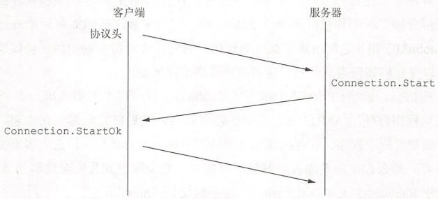
客户端先发送协议头（protocol header）给服务器，服务器收到后，返回Connection.Start给客户端，客户端确认后返回Connection.StartOk给服务器，完成回话启动。
信道
AMQP规范定义了通信的信道，一个AMQP连接可以有多个信道，允许客户端和服务器之间进行多次会话。
AMQP帧结构
上面留意到，建立连接时服务器和客户端的相应都有共同部分Connection，因为AMQP命令是分为类和方法，用点（.）连接。连接时，Connection是使用的类，Start和StartOk是方法。
AMQB的帧由以下组件组成：
- 帧类型
- 信道
- 帧大小（字节）
- 帧有效载荷
- 结束字节标记（0xce）
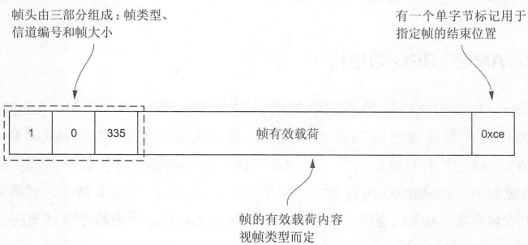 AMQP的帧有五种类型：
- 协议头帧，也就是上面建立连接使用，仅使用一次
- 方法帧，携带发送或接收的请求或相应
- 内容头帧，消息的大小和属性
- 消息体帧，消息的内容
- 心跳帧，双向均可发送，确保连接两端可用和正常工作
下面来看一下这几种类型的帧如何组成消息。
- 除了建立连接以外，AMQP在通信时，首先使用方法帧构建RPC请求所需的类、方法和参数。按照上文的帧结构，现在构造一个帧：
- 帧类型为方法帧（1）
- 信道0
- 有效载荷大小为41
- 有效载荷为类、方法、参数等
- 以0xce结尾
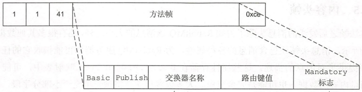
- 方法帧通知对方后，继续构造一个内容头帧，告知对方接下来要发送的消息大小和属性：
- 帧类型为内容头帧（2）
- 信道1
- 有效载荷大小为45
- 有效载荷为：消息体大小55，被设置的属性为144（内容类型）和200（app_id），被设置的属性的值分别为application/json和Test，timestamp属性为1014206880，投递模式为1
- 以0xce结尾
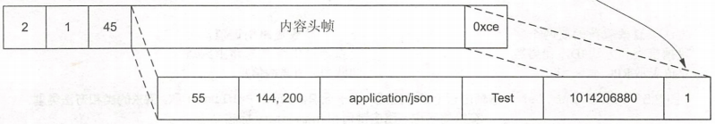 注意内容头帧声明的这些属性是在BasicProperty映射表中的。
- 内容头帧通知对方后，继续构造一个消息体帧发送具体消息：
- 帧类型为消息体帧（3）
- 信道为1
- 有效载荷大小为55（对应内容头帧中的55）
- 有效载荷为一段JSON格式的字符串
- 以0xce结尾
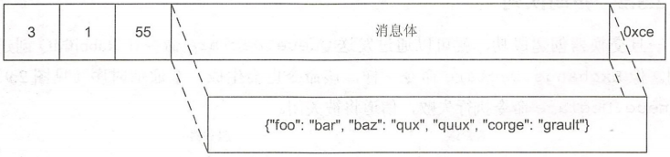 注意AMQP协议是不会理会消息中的内容的，不对消息进行解析，即使知道对方是JSON格式内容。
使用AMQP协议
了解完AMQP协议的格式后，来看一下如何使用AMQP协议。
首先，需要声明一个交换器（Exchange）。交换器在AMQP规范中有自己的类，使用Exchange.Declear命令创建交换器，服务端使用Exchange.DeclearOk进行响应：
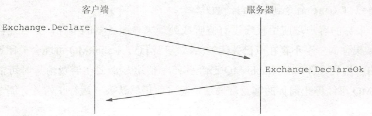 然后再创建一个队列（Queue）。同样Queue.Declear和Queue.DeclearOk完成。注意声明队列的时候多次发送同一个Queue.Declear不会有作用，只有第一次Declear会被处理，后续再Declear同样内容无效，Declear同名不同属性队列也无效。
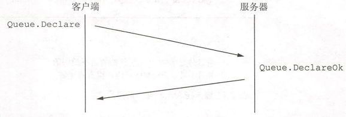 现在我们有交换器和队列，在之前的博客中我们知道，消息是发送给Exchange的，然后Exchange推送至队列中。Exchange和Queue的关系需要进行绑定。使用Queue.Bind和Queue.BindOk命令将Queue绑定至Exchange。
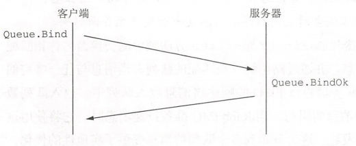 现在所有准备工作都完成了，我们来发布消息到RabbitMQ。通过上文可知，发送消息需要发送方法帧、内容头帧和（至少一个）消息体帧。其中方法帧在发布消息时应该是对应Basic类的Publish方法。
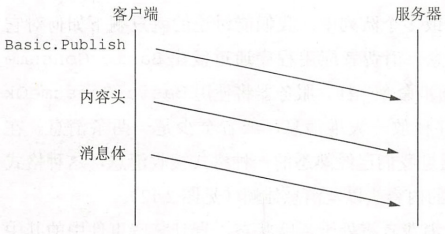
当RabbitMQ收到消息后，它会尝试将方法帧中的交换器名称和配置交换器的数据库进行匹配。如果配置中不存在交换器，将会自动丢弃该消息。如果希望确保投递消息成功，发布时mandatory标志需要设置为true，或者使用投递确认机制。
RabbitMQ收到的消息将会以FIFO的顺序放入队列，并且放入队列的是消息的引用而不是消息本身，这样可以允许一个消息放入多个队列中。
RabbitMQ可以将这些消息保存在内存中或写入磁盘，取决于Basic.Properties中指定的delivery-mode属性。
再来看一下如何从RabbitMQ中消费消息。
与Basic.Publish类似，首先客户端发送Basic.Consume命令，服务端返回Basic.ConsumeOk，消费者进入活跃状态。然后服务端开始向消费者发送消息，以Basic.Deliver为方法帧，加上内容头和消息体帧发送消息。直到消费者发送Basic.Cancel或者触发一些事件前，服务端都会一直发送消息。
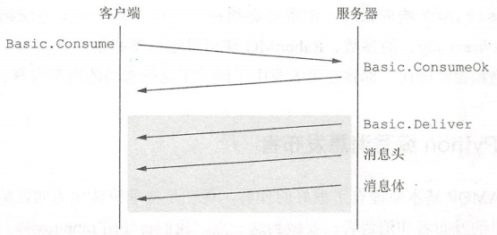 在发送Basic.Consume时，可以设置no_ack=false，这样消费者必须对每条消息发送Basic.Ack进行确认，否则RabbitMQ就会连续发送消息直到Basic.Cancel。
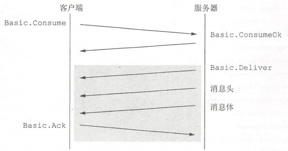 当发送Basic.Ack相应帧的时候，消费者必须在Basic.Deliver方法帧中传递一个投递标签（delivery tag）的参数。
AMQP的Basic.Properties
在内容头帧中，有包含很多消息属性，如上文提到的属性144，值为application/json，实际上属性144就是代表content-type。通过这些属性来对消息体进行描述。来看一下Basic.Properties都有哪些属性：
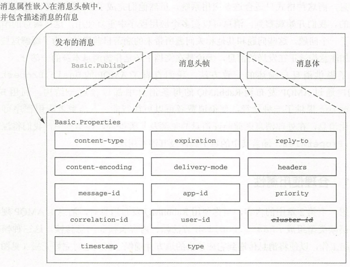 本文不打算一一解释各个属性，它们在需要使用时都可以通过文档查询到。下面选取几个常见的属性简单介绍。
- expiration，时间戳，超过后消息会被服务器丢弃。
- delivery-mode，1表示非持久化消息，2表示持久化消息，性能相关。
- header，自定义消息头，值为键值对，通过header属性可以结合header类型的Exchange实现自定义的消息路由。
- priority，优先级，如果存在更高优先级的消息，消费者将更早获取到。
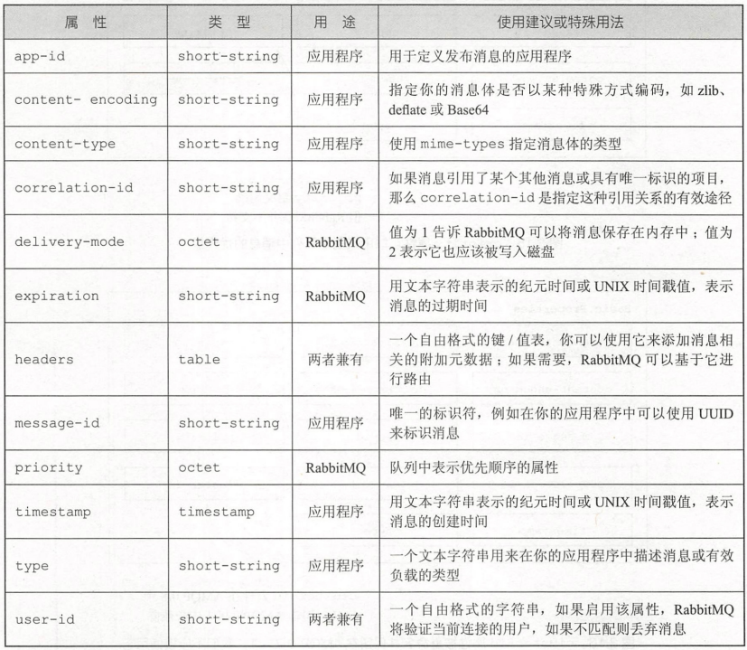
消息发布的性能权衡
《深入RabbitMQ》中有一幅图简单描述了RabbitMQ实现高性能和可靠投递时的设置组合：
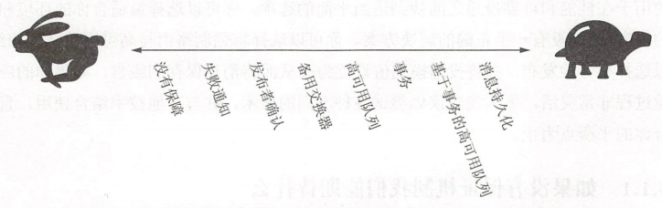 通过结合不同的组合，我们可以从RabbitMQ上榨取最好的性能或者保障更可靠的消息传递。
下面介绍几个实现不同需求的设置。
mandatory
mandatory标志是和Basic.Publish一起传递的参数，告诉RabbitMQ如果消息不可路由，将它通过Basic.Return返回给消费者。
发布者确认替代事务
为了确认RabbitMQ收到消息，在发送消息前，发送Confirm.Select命令，等待RabbitMQ返回Confirm.SelectOk以开启投递确认。开启后，对于每条发布的消息，服务器都会返回Basic.Ack响应，或者Baskc.Nack并让发布者决定如何处理。
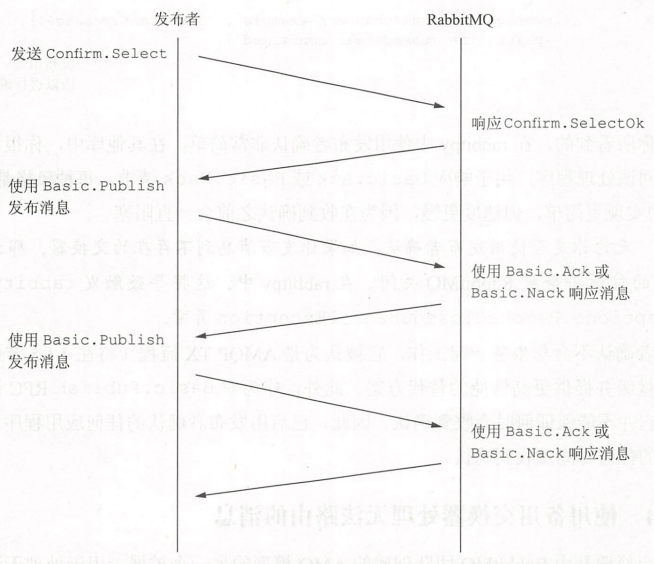
备用交换器处理无法路由的消息
声明一个Exchange作为备用交换器，然后在声明其他交换器时使用参数alternate-exchange=备用交换器。备用交换器（AE）类型设定为fanout，当消息在Exchange上无法路由时，它将会由AE路由至死信队列。
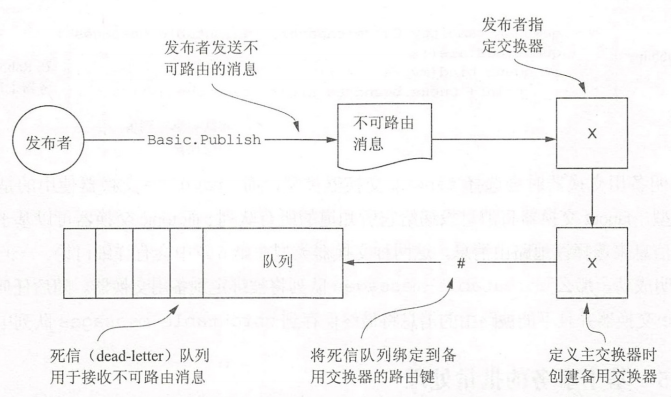
事务
在没有确认投递（Confirm.Select）的情况下，事务是确保消息被成功投递的唯一方法。AMQP事务（TX）的使用是：
- 发送TX.Select，相应TX.SelectOk
- Basic.Publish
- TX.Commit和TX.CommitOk
在Basic.Publish后如果有异常，可以通过TX.Rollback处理。
HA队列
HA队列作为RabbitMQ的高可用实现，通过RabbitMQ集群，在创建Queue时设置HA策略，开启HA队列。当消息发布到高可用队列中，该消息会被发送到集群中的每台服务器，一旦消息在任何节点完成消费，那么消息的所有副本将立即从其他节点中删除。
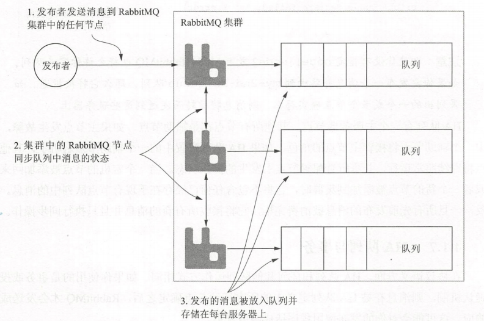
delivery-mode
通过设置delivery-mode=2，消息会被持久化到硬盘。持久化会导致性能问题。当消息引用不存在任何队列中，RabbitMQ将从硬盘中删除消息。
RabbitMQ回推
发布者有可能大量发送消息，如果不进行处理，有可能会拖垮服务。
在旧版本中，发布者发布过快，将会收到一条Channel.Flow让发布者产生阻塞，直到接收到另一条Channel.Flow命令为止。
但是对于不礼貌的发布者而言，无视Channel.Flow命令继续发送仍然会导致问题。RabbitMQ团队使用TCP背压机制来解决这个问题，通过停止接受TCP的低层数据来防止被拖垮。
在内部RabbitMQ有一套信用机制，接收到消息时会扣除一点信用值，完成处理返还信用值。当信用值不足时，当前连接的消息会被跳过直到它有足够的信用值为止。
RabbitMQ还有通知客户端已被阻塞的方法：Connection.Blocked和Connection.Unblocked。
RabbitMQ和消费者
上面聊完发布者和RabbitMQ，现在轮到消费者和RabbitMQ了。
拉取和消费
消费者获取消息可以通过Basic.Get和Basic.Consume，下面来比较一下这两者：
- Basic.Get类似于轮询，如果有消息可消费，返回Basic.GetOk和内容头、消息体；如果没有消息可消费，返回Basic.GetEmpty。
- Basic.Consume开启消费者活动状态，RabbitMQ如果有消息即可向消费者进行推送：Basic.Deliver，视情况消费者再返回Basic.Ack。
- Basic.Consume的性能比Basic.Get更好，Get的轮询影响吞吐量，并且它不知道什么时候会有新的消息，所以要一直询问。
no-ack
消费者发送Basic.Consume的时候，可以带上no-ack标志，表示消费消息不需要进行ack确认，提高性能。
如果不开启no-ack，RabbitMQ会等待消费者发送Basic.Ack确认消息，如果不得到确认，消息将不会被消费掉。
服务质量设置控制消费者预取
如果消息要一条一条确认，那会比较麻烦。通过QoS设置，在确认消息之前，消费者可以预先接收一定数量的消息。
使用QoS的好处就是不用每次都确认消息，通过Basic.Ack设置multiple属性为True，可以让RabbitMQ知道消费者想确认之前未确认的消息。
消费者使用事务
和生产者一样使用TX类，可能会对性能有影响。
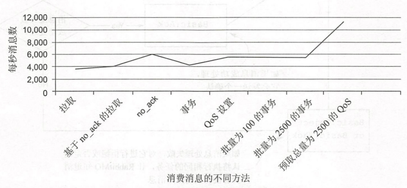
拒绝消息
Basic.Reject命令告知服务端，消费者无法对投递的消息进行处理。类似的还有RabbitMQ团队扩展的Basic.Nack命令，与Basic.Reject功能类似，但是支持像Basic.Ack一样对多消息进行处理。
死信交换器（DLX）是对AMQP规范的扩展。DLX是用来保存被拒绝的消息。一旦拒绝了一个不重新发送的消息，RabbitMQ将把消息路由到队列的x-dead-letter-exchange参数中指定的交换器。
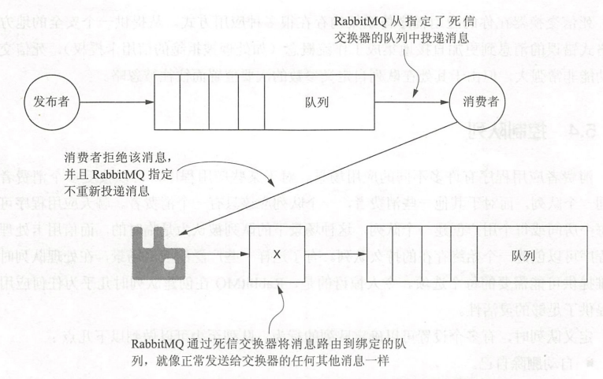
使用DLX，首先需要声明一个Exchange（图中的x），在声明Queue的时候将Queue的x-dead-letter-exchange指定为x即可。
控制队列
在RabbitMQ可以定义很多不同的队列行为，如：
- 自动销毁自己
- 只允许一个消费者消费
- 消息自动过期
- 保持消息数量有限
- 将旧消息推出堆栈
临时队列
有的时候我们会希望在没有消费者连接队列时，自动删除这个队列。创建自动删除队列非常简单，只需要在Queue.Declear中将auto_delete标志设置为True。
只允许单个消费者
RabbitMQ鼓励多个消费者进行消费，当然它也还是可以支持消费者独占队列的。通过设置exclusive属性为True可以确保只有单个消费者进行消费，队列会在消费者断开连接后自动删除。
自动过期队列
之前有提到过的消息的expiration参数，现在通过设置x-expires参数，可以声明一个自动过期队列。不过需要注意，自动过期队列只有在没有消费者的情况下才会过期，否则只有在发出了Basic.Cancel之后才会自动删除。如果队列在TTL内收到了Basic.Get请求，那么队列的过期设置会无效。
永久队列
如果需要重启后仍可用的队列，需要在声明时设置durable为True。务必要将队列持久化和消息持久化区分开来，相对应的，消息持久化是delivery-mode设置为2。当队列持久化设置之后，需要通过Queue.Delete删除。
队列中的消息自动过期
对于不重要的消息，可以在没被消费的情况下，不需要存在太久。对于队列而言，设置x-message-ttl可以规定队列中的所有消息最大生存时间。
队列最大长度
从RabbitMQ 3.1.0开始，可以指定队列的最大长度，超过最大值时，添加新消息的同时就会删除位于队列最前端的消息，也就是确保队列中为最近新增的n个消息。通过设置x-max-length参数可以实现这个功能。
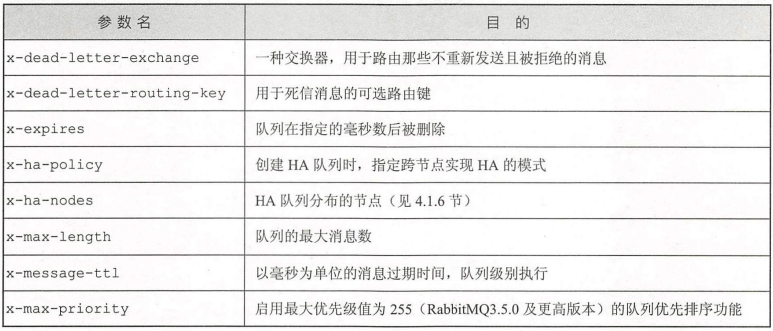
RabbitMQ消息路由模式
消息路由在之前的博客中已经介绍过了，RabbitMQ中主要有几种基本的Exchange：
- Direct，匹配routing_key
- Fanout，广播至所有Queue
- Topic，模式匹配routing_key
- Headers
其中Headers之前的博客是没有使用过的，在这里简略介绍一下。
之前提到过，在Basic.Publish时可以给消息添加各种headers属性，就像HTTP的请求头字段一样。Headers的Exchange通过设定一些header字段，如果消息的header能够匹配Exchange的header，则可以发布到对应的Queue中去。简单来说，就是通过headers来匹配路由的方式。
总结
本文主要对AMQP协议进行了介绍，同时协议（以及RabbitMQ自行扩展的规范）中的各个设置可能会对MQ的性能和可靠性产生影响，这些内容也从发布者和消费者的角度进行了介绍，以满足不同性能、可靠性要求的业务。
深入了解RabbitMQ，很显然真正的消息队列应用与简单的Radis用作消息队列差异是非常大的，RabbitMQ实现了很多简单队列原生不支持的功能，例如优先级队列、自销毁队列、队列可靠性保障、拉取与消费模式等。在消息队列的场景中，如果有可靠性的要求，应该避免再使用自建的简单队列和造轮子再保障SLA，将对应业务转移至专业的MQ上来。